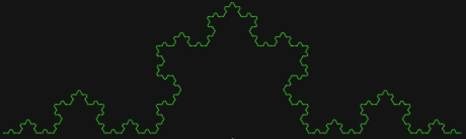

is a peculiar function-writing paradigm that asks programmers to do the
unintuitive when designing functions:
to declare a function call to the very function they're defining, within said definition!
Although paradoxical on its face, recursion is a powerful tool in a
programmer's tool-belt that allows one the ability to navigate data
structures, and in our case, construct very cool fractal graphics
in a way that would be difficult to achieve by other means! :]
This first target graphic resembles a quilt-like pattern, and is ultimately achieved through the primary establishment of a "base square" from which our recursive function can construct its larger picture from.
As with every recursive function, it is imperative to account for a base case that our function can look towards for resolution.
In this case, we want our base case to instruct DrRacket to create a solid square whose color is directly pulled from the first element of our argument list:
Under the same cond statement, we can further instruct DrRacket to populate an image using two things:
A recursive call to this function, with the rest of our list
A solid square, whose dimensions corresponds to the size of our recursive call and is painted according to the first element of our argument list
We then take advantage of the above and then beside syntax to populate our Sierpiński Carpet!:
5 recursive calls
Fun Fact: the Sierpiński Carpet was first described in 1916
Our second recursive graphic aims to recreate a snowflake pattern.
This go around, we're going to want our "base case" to return a very tiny, solid square.
When considering how we're going to go about constructing a snowflake-ian curve from a square, we're going to want to concede that we're not going to construct a line. Rather, we're going to create the illusion of curves via the rotation of base-squares and recursive calls.
Fortunately for us this can be achieved using "beside/align":
After a few layers of recursion we're able to achieve a shape that's beginning to resemble a snowflake (6 instances of recursion here):

6 recursive calls
Having achieved this much, it isn't too much more work to construct our snowflake from here.
Considering the symmetrical nature of snowflakes, we're able to construct our snowflake by positioning three different calls to our previously created function in relation to one another as such:
With our final snowflake defined to position calls to our recursive function, we can create our snowflake! :
This graphic is a popular recursive graphic, but is surprisingly complicated to achieve in DrRacket due to the nature of how these shapes and images are created.
Despite this, we will want to begin this task as we would with any other recursive function: we want to account for a base case.
For our purposes of constructing a tree, we will have our base case return us a "twig" that is entirely just a solid, brown rectangle:
Our final fractal pattern is a Sierpiński triangle. This pattern is going to require us to establish a base case where we return the function a solid triangle:
With a base case established, we can achieve our graphic by placing a recursive call to our function above two other recursive calls that are themselves positioned beside one another: